Оглавление |
|||
|---|---|---|---|
| ПУВ | ПУГВ | ППВ | МКЭШ |
| КУПВ | КСВВ | КПСВВ | РПШ |
| Jz-600 | ТРП | КНММ | ТПП |
| КПСнг-FRHF | Витая пара | Оптоволокно | |
В этой статье собраны самые распространенные типы слаботочных кабелей, их характеристики, свойства и места применения.
ПУВ
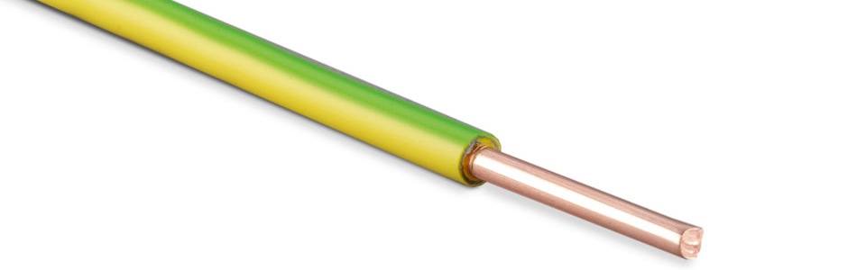Расшифровка: Провод с медными жилами с ПВХ изоляцией плоский с разделительным основанием.
Сечение: 1 жила, 0,5-400 кв.мм.
Применяется: Провода применяются для электрических установок при стационарной прокладке в осветительных и силовых сетях, а также для монтажа электрооборудования, машин, механизмов и станков, внутренних электроустановок на номинальное переменное напряжение до 450/750 В включительно номинальной частотой до 400 Гц или постоянное напряжение до 1000 В включительно.
ПУГВ
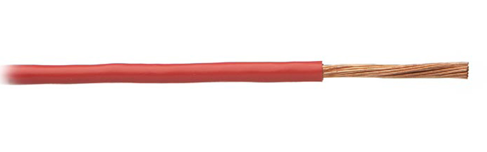Расшифровка: Провод установочный гибкий изоляция из ПВХ.
Сечение: 1 жила, 0,5-400 кв.мм.
Применяется: Провода применяются для электрических установок при стационарной прокладке в осветительных и силовых сетях, а также для монтажа электрооборудования, машин, механизмов и станков, внутренних электроустановок на номинальное переменное напряжение до 450/750 В включительно номинальной частотой до 400 Гц или постоянное напряжение до 1000 В включительно.
ППВ
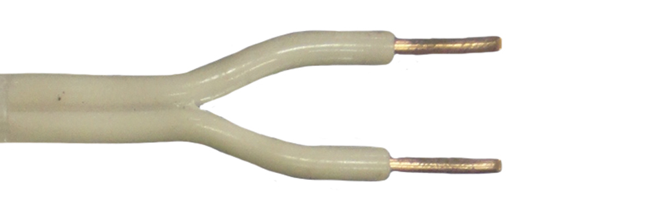Расшифровка: Провод с медными жилами с ПВХ изоляцией плоский с разделительным основанием.
Сечение: 2-3 жил, 1,5-6,0 кв.мм.
Применяется: Провода предназначены для негибкого монтажа электрических цепей на номинальное напряжение до 450 В (для сетей 450/750 В) частотой до 400 Гц или постоянное напряжение до 1000В.
МКЭШ
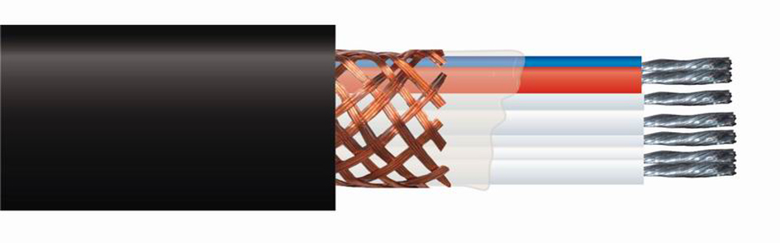Расшифровка: Кабель монтажный с капроновой изоляцией жил экранированный с изоляцией из полиамидного шелка.
Сечение: 2-14 жил, 0,35-0,75 кв.мм.
Применяется: Кабель монтажный экранированный МКЭШ применяется для фиксированного межприборного монтажа электрических устройств.
КУПВ
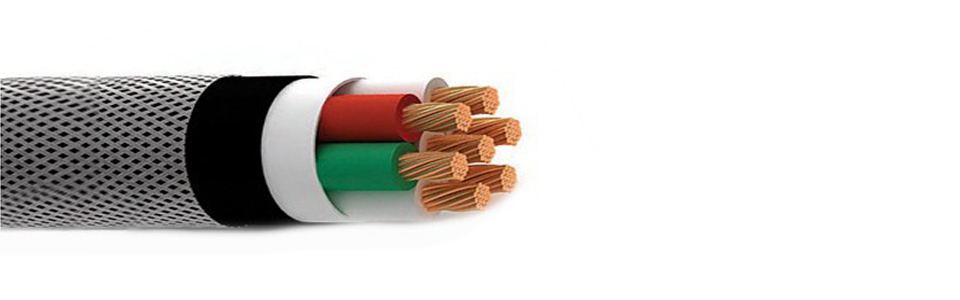Расшифровка: Кабель управления и контроля, изоляция жил из полиэтилена, оболочка из ПВХ .
Сечение: 7-108 жил, 0,35-0,5 кв.мм.
Применяется: Кабели предназначены для передачи электрических сигналов управления малой мощности переменным напряжением до 250 В частоты до 1000 Гц или постоянным напряжением до 350 В. Кабели эксплуатируются в диапазоне температур от -50°С до +70°С при фиксированном монтаже. Кабели КУПВ стойки к воздействию относительной влажности до 98% при температуре до +35°С, к действию росы, инея, соляного тумана, динамической пыли (песка), плесневых грибов и многократным, до 100 раз, перегибам, к осевому кручению до 50 раз.
КСВВ
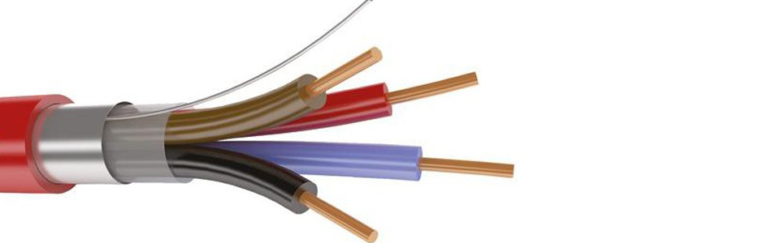Расшифровка: К - Кабель, С - Для систем сигнализации, В - Изоляция жил из поливинилхлоридного пластиката , В - Оболочка из поливинилхлоридного пластиката .
Сечение: 1-27 жил, 0,5-95 кв.мм.
Применяется: Кабель КСВВ с однопроволочными медными жилами диаметром 0,40, 0,50, 0,64, 0,80 мм с изоляцией из композиции полиэтилена (ПЭ), с оболочкой из белого ПВХ-пластиката, для внутренней неподвижной прокладки. Кабель в исполнении «не распространяющие горение» при одиночной прокладке. Возможно изготовление кабеля в оболочке из светостабилизированного полиэтилена для наружной прокладки.
КПСВВ
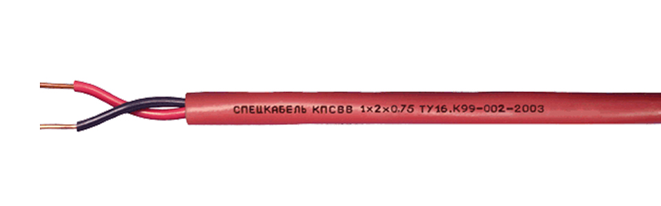Расшифровка: К - Кабель, П - Пожарной, С - Сигнализации, В - Изоляция из ПВХ пластиката, В - Оболочка из ПВХ пластиката.
Сечение: 1х2-2х2 жил, 0,5-2,5 кв.мм.
Применяется: Кабель предназначен для одиночной прокладки в современных системах сигнализации, системах контроля доступа, а также для других систем управления, контроля и связи.
РПШ
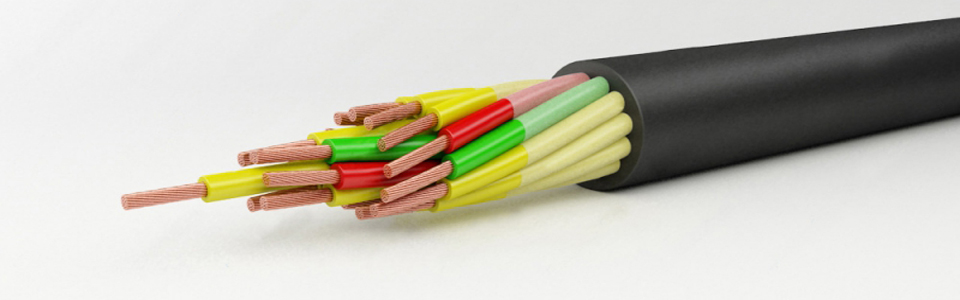Расшифровка: Р - резиновая изоляция, П - изоляция или оболочка из термопластичного полиэтилена, Ш - изоляция из полиамидного шелка.
Сечение: 2-14 жил, 0,75-6 кв.мм.
Применяется: Провода РПШ используются для присоединения установок в эл. сетях, а также для монтажа радиоаппаратуры, применяются для нестационарной прокладки. Эксплуатация происходит в макроклиматических районах с умеренным климатом; в закрытых помещениях при отсутствии воздействия прямого солнечного излучения и атмосферных осадков.
Jz-600
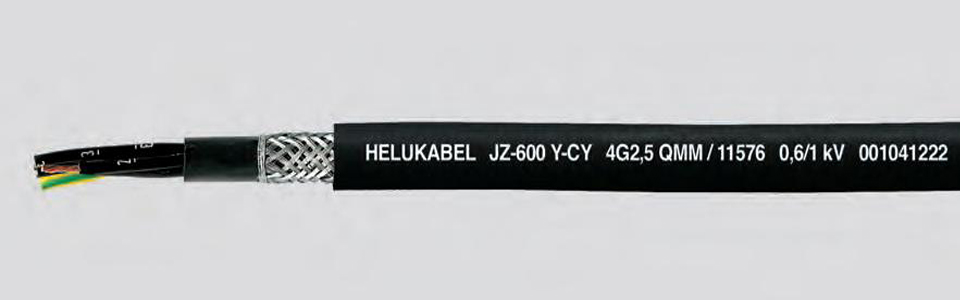Расшифровка: Монтажный провод из термопластического поливинилхлорида (ПВХ)
Сечение: 2-25 жил, 0,75-185 кв.мм.
Применяется: Применяется в металлообрабатывающем оборудовании, ленточных и конвейерных транспортерах, поточных линиях, на производстве комплектного промышленного оборудования, кондиционирующего оборудования, сталепрокатных и металлургических предприятиях.
ТРП
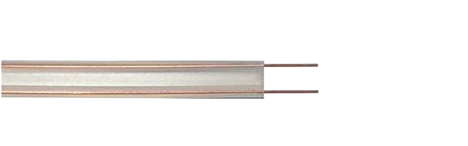Расшифровка: Т - Телефонный, Р - Для радиофикации, П - Изоляция из полиэтилена.
Сечение: 2-4 жил, 0,4-0,5 кв.мм.
Применяется: Провод предназначен для стационарной скрытой и открытой абонентской проводки телефонной распределительной сети внутри помещений и по наружным стенам зданий.
КНММ
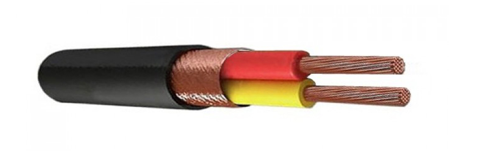Расшифровка: Кабель микрофонный малогабаритный.
Сечение: 2-4 жил, 0,12-0,35 кв.мм.
Применяется: Предназначен для монтажа микрофонных линий и подключения микрофонов. Также может использоваться при подсоединении датчиков к измерительным и регистрирующим приборам.
ТПП
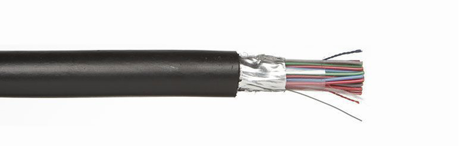Расшифровка: Т - Телефонный, П - Изоляция из полиэтилена, П - Оболочка из полиэтилена.
Сечение: 2-100 жил, 0,32-0,64 кв.мм.
Применяется: Эксплуатируют в местных первичных сетях связи с номинальным напряжением дистанционного питания до 225 или 145 В переменного тока частотой 50 Гц или напряжением до 315 и 200 В постоянного тока соответственно. прокладывается в телефонной канализации, коллекторах, шахтах, по стенам.
КПСнг-FRHF

Расшифровка: К - Кабель, ПС - Для систем противопожарной защиты, нг-HF - Оболочка из безгалогенной композиции на основе полиолефинов, индекс "HF" означает отсутствие галогенов, (А) - Категория по исполнению в части показателей пожарной безопасности, FR - Огнестойкий, с изоляцией из огнестойкой кремнийорганической резины.
Сечение: 1х2-2х2 жил, 0,2-1 кв.мм.
Применяется:Для групповой стационарной прокладки в системах противопожарной защиты, в т.ч. системах пожарной сигнализации (ОПС), системах оповещения и управления эвакуацией (СОУЭ), системах автоматического пожаротушения (АУПТ), системах противодымной защиты, а также в других важных системах жизнеобеспечения, которые должны сохранять работоспособность в условиях пожара. Кабели не выделяют коррозионно-активных газообразных продуктов, обладают лучшими показателями по дымо- и газовыделению, чем у кабелей исполнения нг-FRLS.
Витая пара
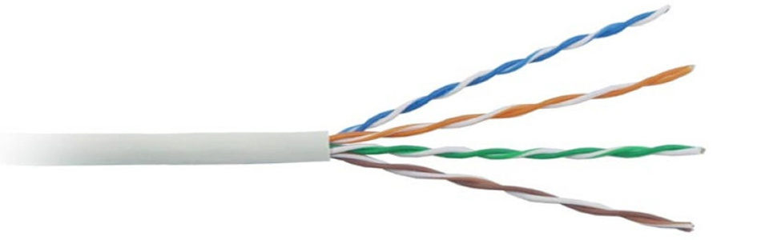Расшифровка:
UTP-Неэкранированная витая пара, кабель не имеет защитного экрана.
FTP-Фольгированная витая пара, кабель защищенный одним общим слоем фольги.
STP-Экранированная витая пара, кабель в котором каждая пара защищена отдельным слоем фольги имеется общий внешний слой фольги.
S/FTP-Фольгированная экранированная витая пара, кабель, в котором каждая пара оплетена фольгой и имеет внешний экран из медной оплетки для защиты всего кабеля.
U/STP-Незащищенная экранированная витая пара, кабель, в котором каждая пара защищена фольгированной оплеткой, а внешний экран отсутствует.
SF/UTP-Защищенная экранированная витая пара, кабель защищенный двойным внешним слоем.
Сечение: 1-4 пары, 0,4-0,6 кв.мм.
Применяется:
САТ1-Телефонные и старые модемные линии.1 пара, не описано в рекомендациях EIA/TIA для передачи данных (в России применяется кабель и вообще без скруток — «лапша» — у неё характеристики не хуже, но больше влияние помех).
САТ2-Старые терминалы.2 пары проводников, старый тип кабеля, не описано в рекомендациях EIA/TIA для передачи данных, поддерживал передачу данных на скоростях до 4 Мбит/с.
САТ3-10BASE-T, 100BASE-T4 Ethernet.4-парный кабель, используется при построении телефонных и локальных сетей 10BASE-T и token ring, поддерживает скорость передачи данных до 10 Мбит/с или 100 Мбит/с по технологии 100BASE-T4 на расстоянии не дальше 100 метров. В отличие от предыдущих двух, отвечает требованиям стандарта IEEE 802.3. Сейчас используется в основном для телефонных линий.
САТ4-token ring, сейчас не используется. Кабель состоит из 4х скрученных пар, использовался в сетях token ring, 10BASE-T, 100BASE-T4, скорость передачи данных не превышает 16 Мбит/с по одной паре.
САТ5-100BASE-TX Ethernet (LAN, ATM,CDDI).4-парный кабель, используется при построении локальных сетей 10BASE-T, 100BASE-TX и 1000BASE-T и для прокладки телефонных линий, поддерживает скорость передачи данных до 100 Мбит/с при использовании 2 пар и до 1000 Мбит/с при использовании 4 пар.
САТ5е-1000Base-T.4-парный кабель, усовершенствованная категория 5 (уточненные/улучшенные спецификации). Скорость передач данных до 100 Мбит/с при использовании 2 пар и до 1000 Мбит/с при использовании 4 пар. Кабель категории 5e является самым распространённым и используется для построения компьютерных сетей. Иногда встречается двухпарный кабель категории 5e. Преимущества данного кабеля в более низкой себестоимости и меньшей толщине.
САТ6-Fast Ethernet, Gigabit Ethernet (10GBASE-T Ethernet).применяется в сетях Fast Ethernet и Gigabit Ethernet, состоит из 4 пар проводников и способен передавать данные на скорости до 10 Гбит/с на расстояние до 55 м. Добавлен в стандарт в июне 2002 года.
САТ6а-Gigabit Ethernet (10GBASE-T Ethernet).Применяется в сетях Gigabit Ethernet, состоит из 4 пар проводников и способен передавать данные на скорости до 10 Гбит/с на расстояние до 100 метров. Добавлен в стандарт в феврале 2008 года, ISO/IEC 11801:2002 поправка 2.
САТ7-Gigabit Ethernet (10GBASE-T Ethernet).Спецификация на данный тип кабеля утверждена только международным стандартом ISO 11801, скорость передачи данных до 10 Гбит/с. Кабель этой категории имеет общий экран и экраны вокруг каждой пары. Седьмая категория, строго говоря, не UTP, а S/FTP (Screened Fully Shielded Twisted Pair).
САТ7а-Gigabit Ethernet (40GbE, 100GbE).разработана для передачи данных на скоростях до 40 Гбит/с на расстояние до 50 м и до 100 Гбит/с на расстояние до 15 м.
Оптическое волокно
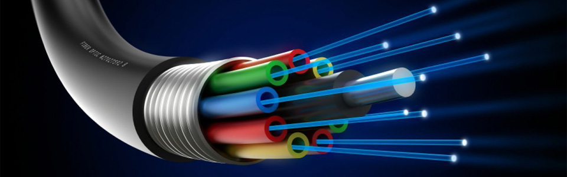Расшифровка: Нить из оптически прозрачного материала (стекло, пластик), используемая для переноса света внутри себя посредством полного внутреннего отражения.
Сечение: Оптическое волокно, как правило, имеет круглое сечение и состоит из двух частей — сердцевины и оболочки. Для обеспечения полного внутреннего отражения абсолютный показатель преломления сердцевины несколько выше показателя преломления оболочки. Луч света, направленный в сердцевину, будет распространяться по ней, многократно отражаясь от оболочки. Оптические волокна, используемые в телекоммуникациях, как правило, имеют диаметр 125±1 микрон. Диаметр сердцевины может отличаться в зависимости от типа волокна и национальных стандартов.
Применяется: Основное применение оптические волокна находят в качестве среды передачи на волоконно-оптических телекоммуникационных сетях различных уровней: от межконтинентальных магистралей до домашних компьютерных сетей. Применение оптических волокон для линий связи обусловлено тем, что оптическое волокно обеспечивает высокую защищенность от несанкционированного доступа, низкое затухание сигнала при передаче информации на большие расстояния и возможность оперировать с чрезвычайно высокими скоростями передачи. Так, к 2008 году была достигнута скорость 10,72 Тбит/с, а к 2012 — 20 Тбит/с. Последний рекорд скорости - 255 Тбит/с.